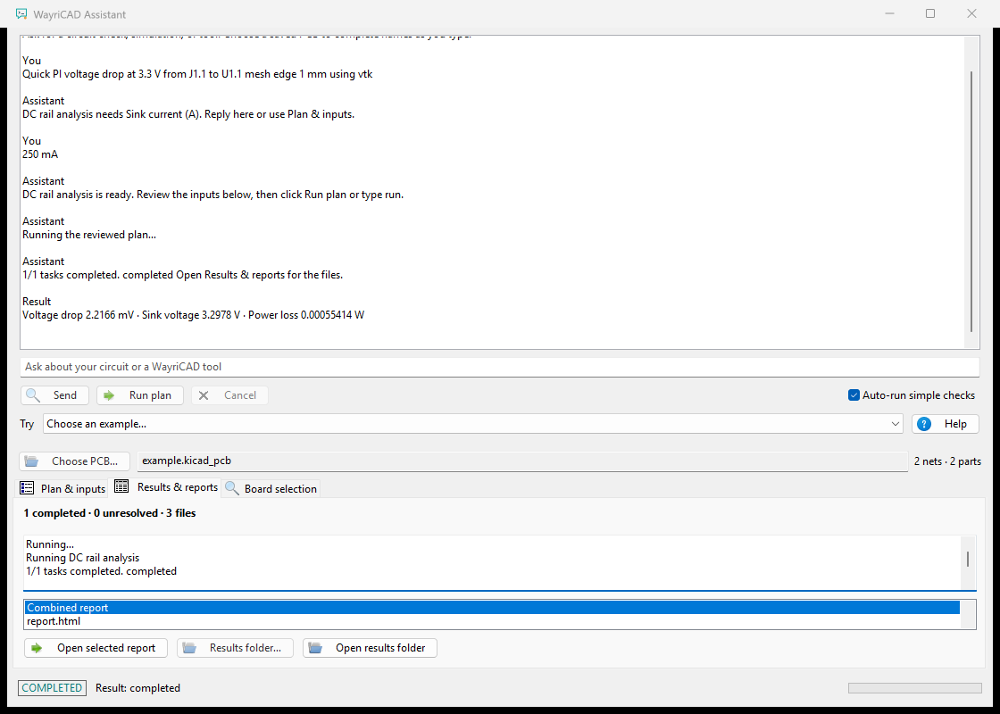

Ask for a check, simulation or plugin in the chat. The Assistant matches local phrases to registered WayriCAD actions.

Choose a saved PCB. When a net, part or pad suggestion appears, use the arrow keys and Tab, or double-click a row. The indexed names and copper preview come from the saved PCB. Save editor changes before running.
Quick PI supports DC rail analysis, multi-net DC batches, explicit load-step transients, and reviewed AC, series, batch and electrothermal study files. Quick SI supports route screening and reviewed multi-net study files. QuickTherm supports component screening, a steady board heat map with explicit source watts, and reviewed transient and solid studies. Study material assumptions, loads, drivers and thermal boundary conditions remain part of the input.
For independent rails, try Quick PI batch: net 3V3 from J1.1 to U1.1 at 3.3 V with 500 mA, net 1V8 from J1.2 to U1.2 at 1.8 V with 200 mA. Substitute saved net and pad names. Quote names containing spaces. The Assistant checks each pad against its rail on the saved PCB and produces one batch report. Use a reviewed batch JSON for shared returns or multiple loads per rail.
Ask Set up a Quick PI transient and enter the source voltage, source and path resistance and inductance, the two currents and event time, the load capacitance and ESR, and the time grid. Add those named values and units directly to the request to prefill the form. This solves a declared lumped circuit with one load. Use Quick PI transient study "transient.json" for a reviewed setup with multiple loads, individual shunts or a finite ramp. The HTML report contains the time plots.
Use List available tools for the registered catalogue. Ask Which plugin handles crosstalk? for tool guidance.
In Board selection, load the preview and click copper to select exact nets. Expand board temporarily enlarges that pane. Show in PCB Editor navigates the selected nets in the originating editor after checking the saved revision. Source files stay unchanged.
Runs retain their plans and reports under Documents/WayriCAD/Assistant/results by default. Use Results folder… to change the destination.
wayricad-assistant capabilities wayricad-assistant plan "List available tools" wayricad-assistant run plan.json --output-root results